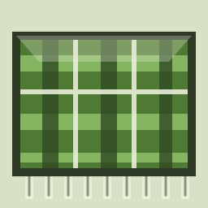

Blanket WebTwelve sounds (rain, storm, waves, wind, stream, fire, birds, summer night, boat, train, city and coffee shop) are real field recordings from Freesound.org and SoundBible (CC0, CC BY or public domain), trimmed to a seamless loop and loaded the first time you use them. The noise colors, binaural focus tone and space drone are synthesized live in your browser from simple physical models (Web Audio API). If a recording cannot load offline, a synthesized version of that sound plays instead. The selection follows the open-source app Blanket. Authors and licences are listed under Credits.
Tap a sound or the play button first, because browsers block audio until you interact. Then check the volume, the silent switch and that the tab is not muted.
Yes. There are no accounts, cookies or trackers. Volumes and theme are stored only on your device, and after the first visit the app works without internet.
Yes! Blanket Web is open source under the MIT license. Source code, issues and ideas live on GitHub: github.com/mkalmousli/NoiseSpace.
They differ in spectral slope. White noise has equal power at every frequency (a bright hiss), pink noise falls 3 dB per octave (1/f, like natural sounds) and brown noise falls 6 dB per octave (1/f², a deep rumble).
Each raindrop makes an air bubble that rings at its Minnaert resonance, about 3.26 / R hertz for a bubble of radius R metres. Drops land at random (Poisson) times with an exponential size spread, as in real rain.
Fire is a low roar plus random crackles whose sizes follow a heavy-tailed power law, like other crackling-noise systems. Streams are many rising-pitch bubbles. Ocean is a swell, crash and foam cycle of about 10 seconds. Crickets chirp in 3-pulse trains near 4.5 kHz.
It plays 200 Hz in one ear and 210 Hz in the other, so your brain perceives a 10 Hz (alpha range) binaural beat. Headphones are required. A 2019 meta-analysis found small benefits for attention and anxiety, but the effect is not guaranteed.
Evidence is promising but mixed. Some studies found moderate background noise improved attention (Söderlund et al., 2007) and that steady pink noise helped sleep stability (Zhou et al., 2012). Responses vary by person, so try a few and keep what works.
Sound selection follows Blanket. Recordings from Freesound and SoundBible, trimmed, looped and level-matched here. Each name is the sound, then its author.